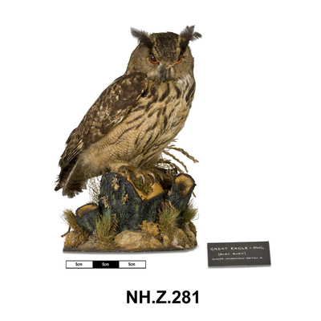

Leaving the bicycle at "Isham's "-who volunteers some slight repairs-I take a flying visit by rail to see Niagara Falls, returning the same evening to enjoy the proffered hospitality of a genial member of the Buffalo Bicycle Club. Seated on the piazza of his residence, on Delaware Avenue, this evening, the symphonious voice of the club-whistle is cast adrift whenever the glowing orb of a cycle-lamp heaves in sight through the darkness, and several members of the club are thus rounded up and their hearts captured by the witchery of a smile-a " smile " in Buffalo, I hasten to explain, is no kin whatever to a Rocky Mountain "smile" - far be it from it.
‘My dear daughter,’ he said, ‘when I am gone be kind to every one, and, above all, cherish the Owl —do cherish the Owl— promise me to cherish the Owl.’  ‘But how can I cherish the Owl?’ cried the poor Princess; ‘how can I, unless I know who he is?’ But the King only answered: ‘Dear Ismara, do promise to cherish the Owl!’ And he said nothing else for a long time, until at last the Princess saw that the only way to let him rest in peace was to promise, and she said: ‘I promise, dear father, but still I[6] do wish I knew who or what the Owl is that I am to cherish.’
"Twenty-one years of it," said Mr. White, nodding at his wife and son. "When he went away he was a slip of a youth in the warehouse. Now look at him."
"He don't look to have taken much harm," said Mrs. White, politely. "I'd like to go to India myself," said the old man, "just to look round a bit, you know." "Better where you are," said the sergeant-major, shaking his head. He put down the empty glass, and sighing softly, shook it again.
This is your book. You may read it. It tells a story. Read about the cows. They give milk. It is milk for you and me. The cows are eating. They like green grass. The sun is shining. Cows need sunshine. They give milk every day. It is milk for you and me.
"I should like to see those old temples and fakirs and jugglers," said the old man. "What was that you started telling me the other day about a monkey's paw or something, Morris?" "Nothing," said the soldier, hastily. "Leastways nothing worth hearing." "Monkey's paw?" said Mrs. White, curiously. "Well, it's just a bit of what you might call magic, perhaps," said the sergeant-major, offhandedly.